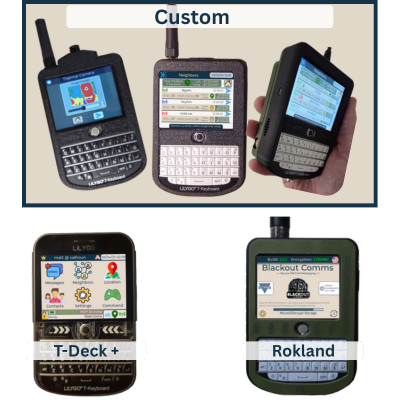

Micrologiciel Blackout Comms T-Deck
|
Où es-tu situé? |
Si vous êtes aux États-Unis, choisissez la version américaine. Sinon, choisissez la version internationale. Utilisez la même option pour tous vos appareils ! | Language: |
Remarque : Le micrologiciel de messagerie et de localisation sécurisée hors réseau Blackout Comms est un produit sous licence. Certaines fonctionnalités peuvent nécessiter l'achat d'une licence.
|
 |
Si votre appareil ne figure pas dans la liste, sélectionnez l'option Tous les autres, bien que nous ne puissions pas garantir la compatibilité.
|
||||
|
En téléchargeant ce micrologiciel, vous acceptez les conditions d'utilisation, vous vous engagez à respecter toutes les lois et réglementations en vigueur lors de l'utilisation de ce micrologiciel, et vous dégagez de toute responsabilité le développeur, Altware Development LLC. Altware Development LLC décline toute responsabilité en cas de perte de données ou de tout autre problème pouvant survenir sur votre appareil avant, pendant ou après l'installation du micrologiciel. Si vous n'acceptez pas ces conditions, n'utilisez pas cet outil et ne téléchargez pas notre micrologiciel.
Instructions alternatives pour le flashage : Si vous savez ce que vous faites et souhaitez installer le micrologiciel mesh tdeck
à l'aide d'un outil d'installation différent, vous pouvez télécharger le fichier binaire précompilé ici (USA):
T-Deck+ Mesh Firmware Custom Mesh Firmware M100 / All Others Blackout Comm Pager DFR Mesh Firmware (Deprecated)
Instructions alternatives pour le flashage : Si vous savez ce que vous faites et souhaitez installer le micrologiciel mesh tdeck
à l'aide d'un outil d'installation différent, vous pouvez télécharger le fichier binaire précompilé ici (Non-USA):
T-Deck+ Mesh Firmware Custom Mesh Firmware M100 / All Others Blackout Comm Pager DFR Mesh Firmware (Deprecated) |
|||||